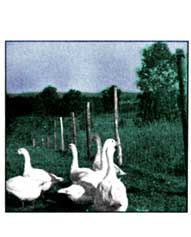

Last year in July we bought a doe goat to breed in the fall. She is a purebred Toggenburg (but not registered) and was only one year old but good-sized. Later on, in December, she came into heat and was bred to a registered Saanen buck. In April she had two kids, a buck and a doe. The kids were very healthy and started to run around soon after birth. We first fed them all goat's milk, then half calf starter and half goat's milk after they were about a week old. Then we gradually changed them to all calf starter, and finally to goat grain.
The doe has to be milked twice a day on a milking stand (a wooden platform for the goat to stand on while she's being milked). The stand should have a grain trough attached to it so the goat may eat. This saves time and calms down the does while they're being milked. Before milking a goat you should always brush her down and wash her udder. For a pail you should have a seamless one (this helps prevent bacteria) and it should be covered to help keep dirt and hair out.
We have three sheep: a mother with two lambs. We bought the mother already bred and ready to lamb for $50.00. We brought her home and the first night she had two twin ewe lambs. They grew fast but didn't eat much grain. They are now out to pasture with some of our goats.
Out of all the chickens we have, only a fraction are laying. In the spring I started hatching some chicken eggs. Since I only got about 14 eggs a day I had to save some. I did this by putting them in an egg box, small end down, in a room with a temperature of about 55 degrees. An egg will stay fertile at this temperature for about a week. When I hatched the eggs I had to turn them three times a day and make sure the temperature stayed at 102° and that the water dish stayed full. A chicken takes 21 days to incubate and hatch. They will usually start hatching on the 20th day.
We also have six geese, which we bought day-old in the spring. The geese grew fast and were able to go out when they were very young. They eat little grain and live mostly on grass in the summer.
We also have six turkeys which we bought day-old from a hatchery. We have started to butcher them, and they are very good eating but hard to raise.
I have been raising rabbits for a few years just to sell. When you breed a rabbit always bring the doe to the buck's cage. A female is ready to be bred when she is about seven months old. Bucks are ready to service at the age of six months. After the doe is bred she will have babies in about 28 days. Never try to watch them being born ... this will make the mother very upset and she may disown or kill the litter. After the young are born don't look at them until they are about two days old. Then you can look through the nest and remove any dead ones. When the baby rabbits are six weeks old or are eating on their own, they should be removed from the mother and are ready for sale.
We have three beehives that we started in May. The bees have been gathering from flowers everywhere and have been making honey fast. We extracted 75 pounds with an extractor that we borrowed. We tried to let the honey drain out of the comb but it didn't work. It would take years to get it all out.
About two years ago we started to do some maple sugaring. We had a lot of big old trees and lots of young ones. In past years this was a big grove used for sugaring.
The first year we tapped only 40 trees but got quite a lot of syrup. The next year we tapped 75 trees but we didn't get much syrup because it was just a bad year. We had to carry the sap in buckets to a big 55-gallon drum we kept it in until we boiled it down. We did this in a big pan set up on cement blocks with a fire under it. We had to cut and carry a lot of wood to keep the fire going but we got a lot of good syrup out of it.
There are three hogs on our farm. We bought them in June, which is quite late to start hogs because they won't be ready until late November. When we feed our pigs they are given a moistened mixture of hog grain and cornmeal, and they also get a full trough of water.
We have a large vegetable garden including strawberries, asparagus, potatoes, corn and all the usual things, plus an herb garden. Next spring we will have more animals and more pasture to fence in and many, many more things to do.
|
|
 |
|